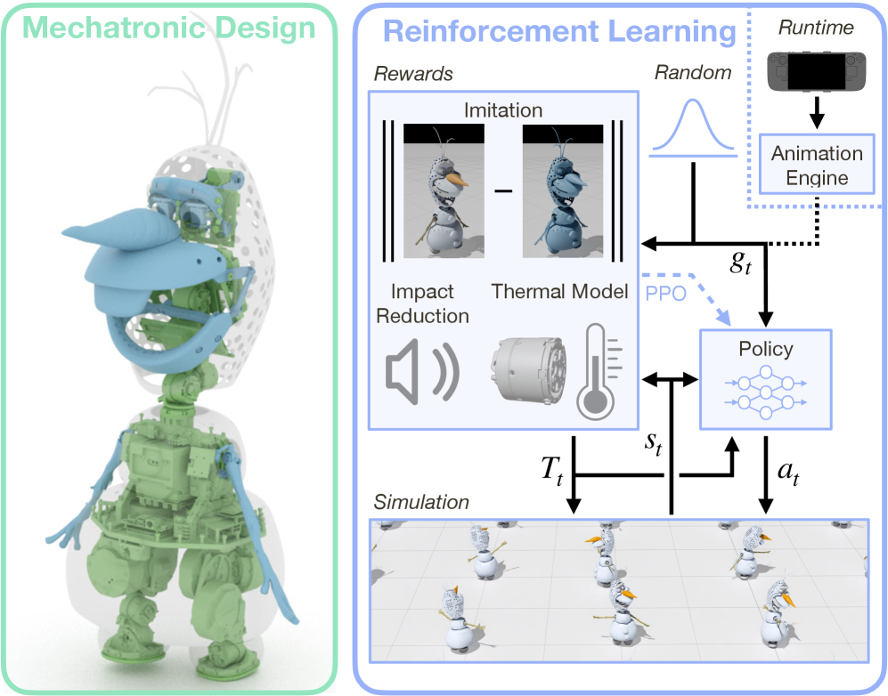
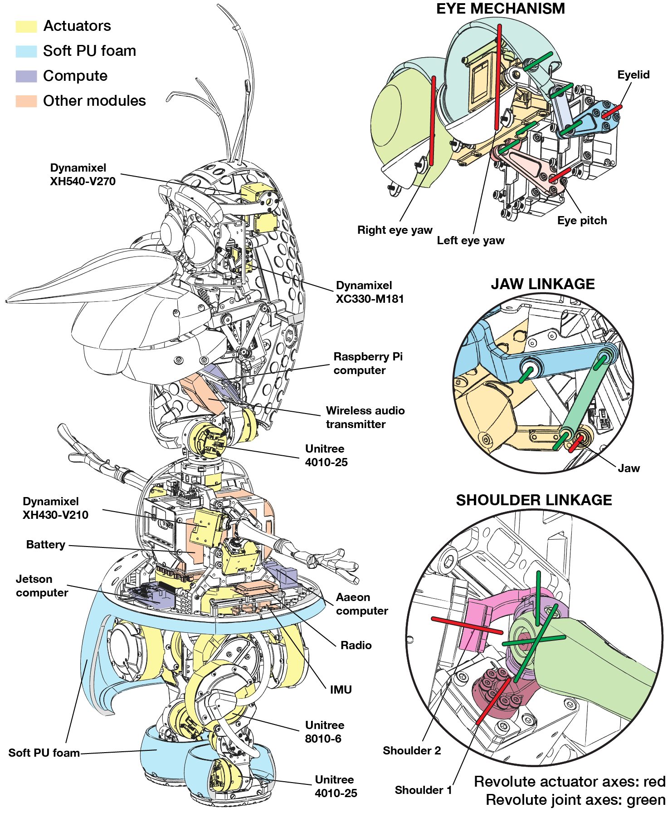
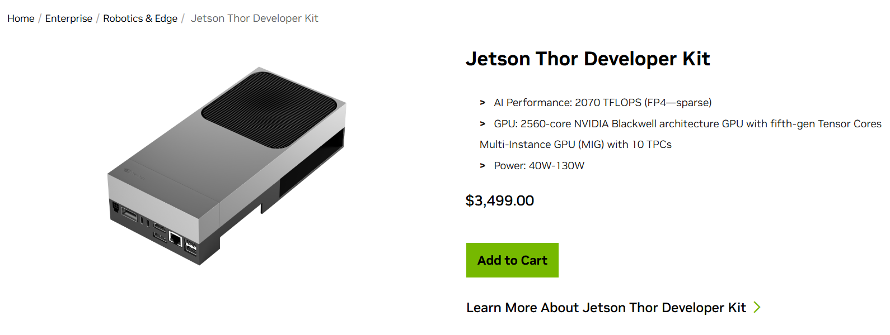
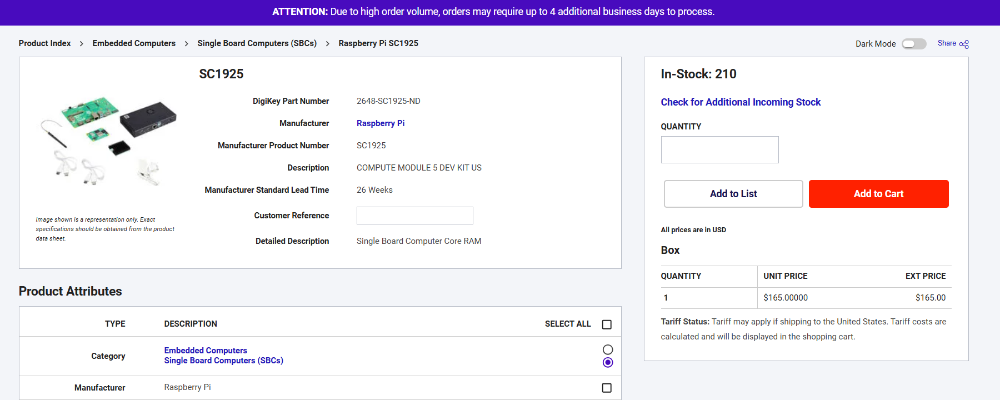
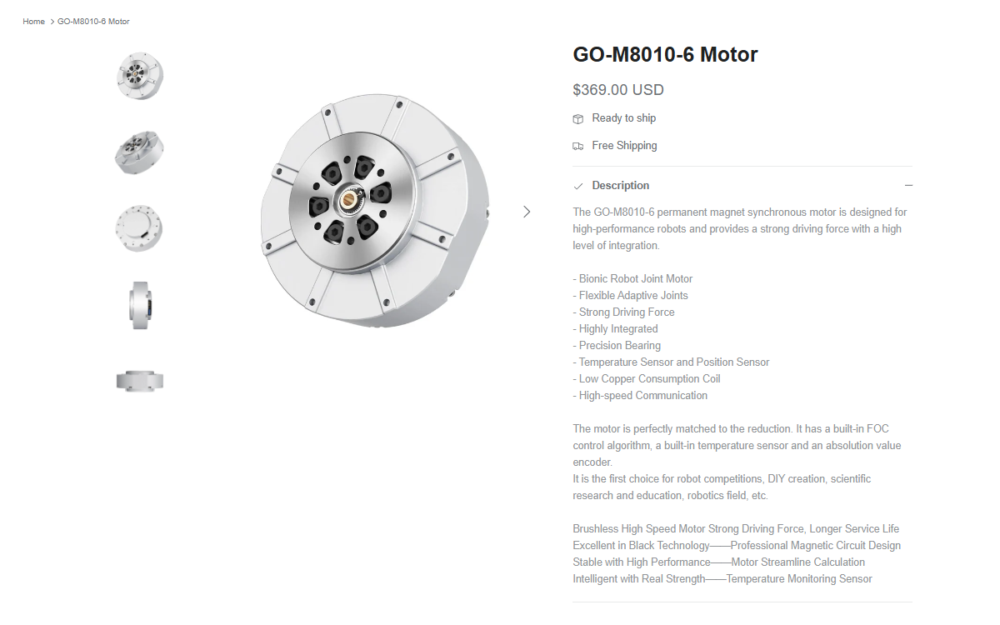
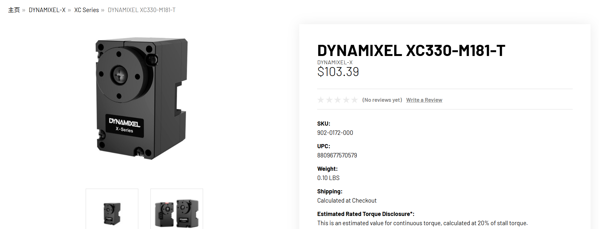
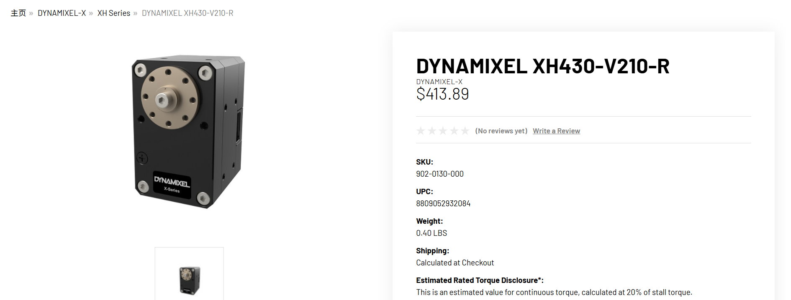
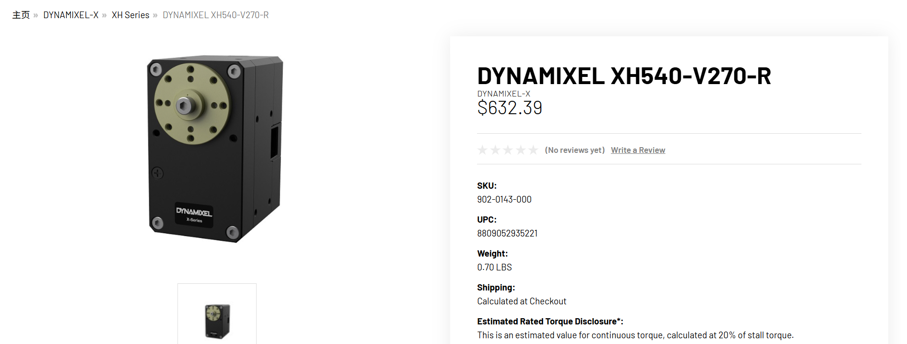

谣言的产生与强化¶

以上 GIF 图片源自视频 Olaf: Bringing an Animated Character to Life in the Physical World | Disney Research，视频中的 Olaf 是 Disney Research 团队研发的基于强化学习的机器人，Olaf 也是 Disney IP Frozen 中的经典形象。这种将影视剧中的童话幻想实现在物理世界中，对于大多数人来说都是巨大的心理冲击，盲目崇拜与心里光环也导致了谣言的产生，社交媒体和 LLM 也加速并强化了谣言的传播。
喜欢 Olaf 的大多数人都会想要知道，这个机器人的造价是多少，毕竟如果在个人经济的可负担范围内，会有不少人为此付费。在 Olaf 视频广泛传播的社交媒体中，有如下一些关于 Olaf 成本与价格的评论：
小红书评论
可以明显观察到，“听说”等模糊性词汇频繁出现，这增加了信息的不可信度。为了更好地查明相关信息，最佳方法就是使用第一手信息，即 Disney Research 团队发表的论文 Olaf: Bringing an Animated Character to Life in the Physical World，论文中有非常明确且详细的有关信息，如下：


Olaf 是基于强化学习训练的机器人，那么其成本主要就是由强化学习训练费用 + 硬件费用两部分构成。从论文中的硬件拆解图可以发现，带有明显品牌名称的产品有
- Jetson computer
- Aaeon computer
- Raspberry Pi computer
- Unitree 4010-25
- Unitree 8010-6
- Dynamixel XH540-V270
- Dynamixel XC330-M181
- Dynamixel XH430-V210
其他没有明显品牌名称的产品，从功能上来看都是可廉价 3D 打印或低价采购的产品。因此硬件成本就集中在以上品牌产品，品牌供应商分别是 Nvidia, Raspberry Pi, Unitree, ROBOTIS 。
对于 Nvidia 的产品，可以查询到 Jetson 系列中目前最贵单品 Jetson Thor Developer Kit 的价格如下：

对于 Raspberry Pi 的产品，可以查询到 Raspberry Pi Development Kit for Compute Module 5 的价格如下：

对于 Unitree 的产品，可以查询到 GO-M8010-6 Motor 的价格如下：

对于 ROBOTIS 的产品，可以查询到的价格如下：



以上产品并非完全能对照 Olaf 机器人的硬件零部件，但是能提供一个大致的成本估算范围，其硬件成本不应超过 50k USD，那么强化学习训练费用呢？
Nvidia 目前最先进的 B100 芯片单个售价也不超过 500k USD，这种计算方式是考虑 Disney Research 团队在本地搭建训练平台，如果是使用云计算平台那么成本会更低。这里有一篇英文报道提及 Olaf 的训练成本：
It took just two days to train Olaf with an Nvidia RTX 4090 GPU.
综合以上，Olaf 机器人的软硬件成本远不到社交媒体评论中所提及的 1M USD 数量级，如果如上述英文报道中的软硬件成本，甚至只会比本文以上估算更低。那么社交媒体中的谣言是从哪里产生的呢？在该社交媒体平台，有一个 LLM 用于随时回答用户的提问，其对于一名用户关于 Olaf 成本提问的回答如下：
“综合多方信息”这一说法，目前没有任何第一手信息可考证，连 Disney Research 团队都没有透露任何信息，那么 LLM 为何会得出如此结论呢？这就要提及全球各大社交媒体是如何构建 LLM 来与用户进行及时交互的。LLM 除了预训练数据，还会使用搜索和 RAG 等技术，及时从平台上收集其他用户的数据并进行汇总。至于平台是否会审核 LLM 给出的信息，从 Olaf 的例子中已经可以看出，除非用户提交举报要求核查等操作，否则并不会进行主动干预。那么 LLM 提供的信息就会强化谣言，更多用户看到后如果不主动进行 Fact Check 而直接相信社交媒体平台 LLM 并误认为这是“官方”认证的话，谣言的传播就像“链式反应”。
不仅是 Olaf，在金融、科技、医疗等需要高知识门槛的领域，谣言的广泛传播更是比比皆是，主要原因不外乎是
- 溯源惰性
- 光环效应
- 人云亦云
目前来看 LLM 的广泛应用，不仅不会带来公众对有效信息的触达，反而会强化谣言和噪声的传播和固化。
2026.4.6